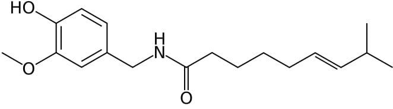

Note: Experiments are still in progress if this message is posted.
Looking at what makes foods spicy/hot, how hot sauce is made, and checking what the timeline is for developing a tolerance to 1,000,000+ SHU sauces.
For most of my life I've hated spicy foods. Flamin' Hot Cheetos made my mouth burn and eyes water and anything with chili powder was promptly refused. But around the age of 20, my friend encouraged me to try sriracha sauce. I loved it. While hot at first, I got progressively used to it to the point of not noticing the heat.
All of this got me thinking: can you train your body to handle even the spiciest sauces/foods? Does getting up into the 100,000 or even 1,000,000 range on the Scoville scale have potential for lasting damage on your body or taste buds? Would I be able to appreciate sauces on the low-end of the scale?
My goals of this experiment are:
Dubbed the "Hottest Burger on the Planet" by Travel Channel's Man V. Food. The "4 Horsemen" burgers contains fresh Jalapeno and Serrano peppers, a Habanero sauce, and the dreaded Ghost (Jolokia) pepper.I expect it to be a year before this is achievable without major discomfort.
Capsaicin is the source of spiciness felt whenever eating a so-called "spicy" food. Capsaicin bonds with its receptor, TRPV1, in the mouth and on the tongue. As Jonah Lehrer puts it in his article Why Does Spicy Food Taste Hot?:
capsaicin - the active ingredient in spicy food - binds to a special class of vanilloid receptor inside our mouth called VR1 receptors. After capsaicin binds to these receptors, the sensory neuron is depolarized, and it sends along a signal indicating the presence of spicy stimuli.
The real purpose of VR1 receptors is thermoreception, or the detection of heat. This means that they are supposed to prevent us from consuming food that will burn our sensitive flesh. (That's why our VR1 receptors are clustered in our tongue, mouth and skin.) As a result, when the receptors are activated by capsaicin, the sensation we experience is indelibly linked to the perception of temperature...But that pain is just an illusory side-effect of our confused neural receptors. There is nothing "hot" about spicy food.
This thermoreception explains why sweating follows eating spicy foods: the body believes it is hot and begins sweating to cool itself.
Despite how hot some foods may feel, no reasonable amount of spicy food can cause lasting damage by themselves. Of course, it's possible to cause lasting damage by eating a ghost pepper and then vomiting until the esophagus ruptures, but that's caused by the vomiting, not the pepper in and of itself. In Glinsukon et al.'s Acute toxicity of capsaicin in several animal species, it was estimated that:
For a 60-kg person, this toxic level would be comparable to the consumption of about 1.94 kg of dry wt of capsicum fruits, an extremely high amount.
Watching people on YouTube try pure capsaicin is a good reference for how much this is and how intense the pain is.
Named after Wilbur Scoville, the Scoville scale measures the spiciness of peppers in units of Scoville Heat Units (SHU).
Scoville's original paper, Note on Capsicums, describes the procedure of quantifying SHUs as follows:
One grain of ground capsicum is macerated over night in 100 cc. of alcohol. After thorough shaking, filtered. This alcoholic solution is then added to sweetened water in definite proportions until a distinct but weak pungency is perceptible on the tongue.
In plain English from the Scoville scale Wikipedia page:
an exact weight of dried pepper is dissolved in alcohol to extract the heat components (capsaicinoids), then diluted in a solution of sugar water. Decreasing concentrations of the extracted capsaicinoids are given to a panel of five trained tasters, until a majority (at least three) can no longer detect the heat in a dilution. The heat level is based on this dilution, rated in multiples of 100 SHU.
The problem with this is subjectivity: some tasters may have more sensitive palates than others, leading to different SHU values.
In comes high-performance liquid chromatography to the quantifiable rescue.
Collins and Wasmund's Improved Method for Quantifying Capsaicinoids in Capsicum Using High-performance Liquid Chromatography provides a high-level overview of the process:
The most commonly used HPLC procedure for determining capsaicinoid content has been outlined in a manual (ASTA, 1985). [I have not been able to find this manual for free online, and am sure as heck not paying to get it.] The ASTA method involves drying and grinding a chile sample, followed by extracting capsaicinoids with 95% ethanol saturated with sodium acetate, and injecting the sample extract into the HPLC instrument. Three peaks are observed corresponding to the pigment, capsaicin, and dihydrocapsaicin.
Scoville Heat Units are calculated in parts per million of heat (ppmH) based on sample dry weight according to the following equation from ASTA (1985): ppmH = [Peak area of capsaicin + (0.82)(peak area of dihydrocapsaicin)](ppm standard)(ml acetonitrile) ÷ (Total capsaicin peak area of standard)(g sample).
\[\text{ppmH} = \frac{\text{Peak area of capsaicin} + 0.82\text{(peak area of dihydrocapsaicin)}}{\text{total capsaicin peak area of standard}}\]Conversion to Scoville Heat Units can be made by multiplying ppmH by a factor of 15.
More literature:
To determine which hot sauces to use, I used the Hot Sauce Scoville Scale, which seems fairly comprehensive without too large of jumps between SHU values. I have noticed that these values differ slightly from other websites' values. I will only use the aforementioned link to maintain consistency.
A few specific notes:
Below I summarize the sauces I tried and my experience with each.
My starting point on 30 January 2021 was around 3,000 SHU with Tapatío Hot Sauce (Salsa Picante).
It was here that I realized I wasn't being objective enough. The sauce amounts were too variable: some days I put on globs, other days a measly serving. From here on out I will be tracking my daily sauce intake in volumetric measurements. I will continue the above entry format, but also include a table detailing sauce, size consumed, and how hot it was on a scale of 1-10.